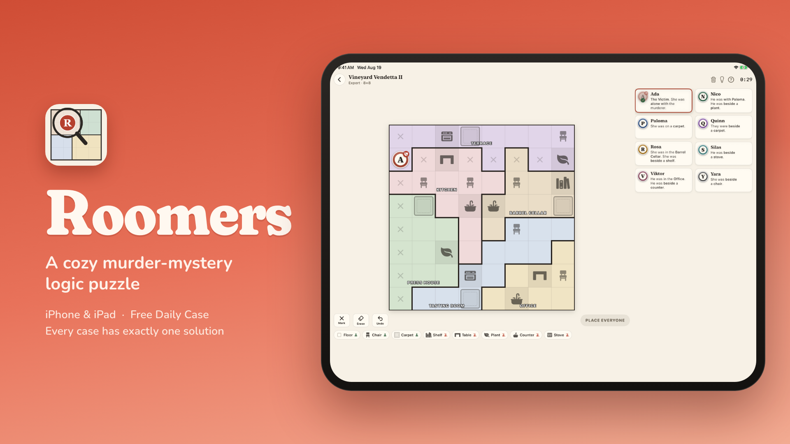
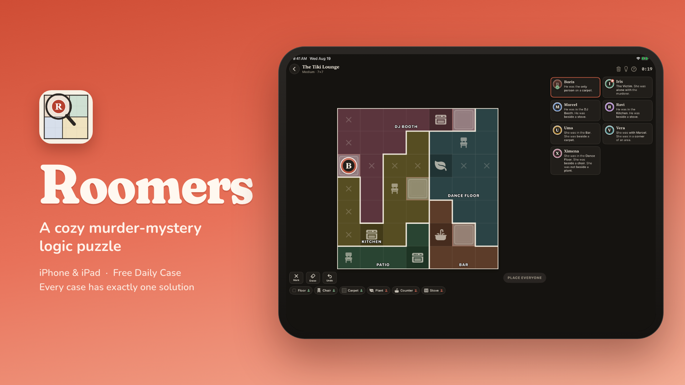
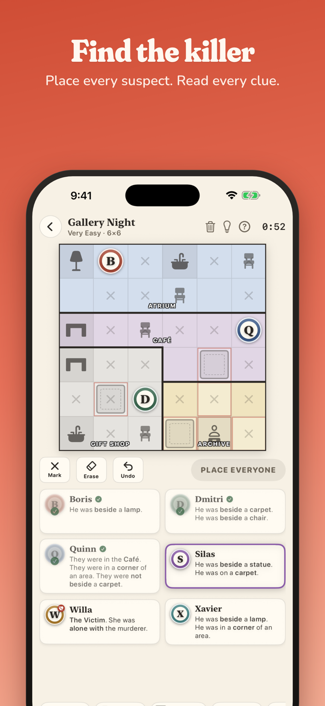
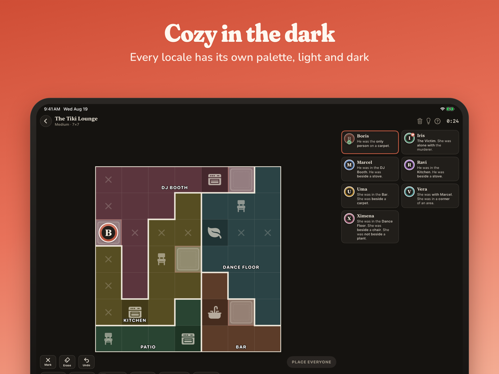
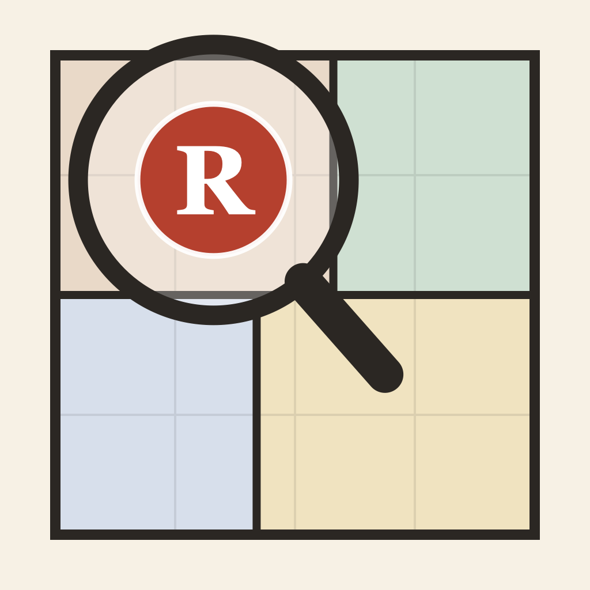

Roomers
Press kit · a cozy murder-mystery logic puzzle for iPhone & iPad
Press kit · a cozy murder-mystery logic puzzle for iPhone & iPad
Roomers is a murder mystery you solve like a logic puzzle. Each case is a floor plan cut into rooms. You place every suspect so each row and column holds exactly one person, follow what each suspect tells you, and whoever ends up alone in a room with the victim is the killer. Every case has exactly one solution, and it's provable. No guessing, ever.
| Developer | Enrique Barclay, solo developer |
| Platforms | iPhone and iPad, iOS 17 or later. Universal app; portrait and landscape on iPad. |
| Price | Free: 41 hand-checked cases (tutorial included) and the Daily Case. One optional one-time purchase, Roomers Unlimited ($9.99): endless generated cases and the daily archive. No ads, no subscription, no account. |
| Languages | English and Spanish (the whole game, clue sentences included, follows the device language). |
| Released | 1.0 on July 2, 2026 · 1.1 (full iPad app) on August 7, 2026 · 1.2 on August 22, 2026 |
| Privacy | App Store label "Data Not Collected". Fully offline, no analytics, no third-party SDKs. The Daily Case is generated on the device from the date, identical for every player. |
| Accessibility | VoiceOver (with four rotors on the board: furniture, suspects, notes, clue squares), Dynamic Type up to the largest accessibility size, Reduce Motion, Differentiate Without Color, Sufficient Contrast (4.5:1), Dark Interface. |
| App Store | apps.apple.com/app/id6779009687 |
| Contact | enriquebarclayrd@gmail.com |
"My wife kept running out of sudoku murder-mystery puzzle books, so I built her one that never runs out: a solver makes endless cases, each with exactly one solution. That's Roomers."
The generator writes a case, the solver proves it has exactly one answer, and only then does it reach the player. The Daily Case uses the date as its seed, so everyone in the world gets the same mystery without a server being involved. Almost everything in version 1.2 came from players who wrote in: a hint system promised on a Reddit thread, accusation options a player emailed about, a Spanish translation requested by a blind player at ONCE in Spain who then tested it, and VoiceOver rotors and a rewritten How to Play that came out of an AppleVis thread.
Free to use in coverage, cropped or as-is. Download everything (zip, 29 MB): 16:9 key visuals, clean screenshots with no captions (12 iPhone, 5 iPad), the captioned App Store sets, hero images, icon, and a plain-text fact sheet.

Key visual, 1920×1080 (PNG)
Key visual, dark, 1920×1080 (PNG)
Hero, iPhone (PNG)
Hero, iPad (PNG)
Icon, 1024×1024 (PNG)In the zip: clean captures with no captions (iPhone 1320×2868, iPad landscape 2752×2064 and portrait 2064×2752, light and dark, Spanish and large text), plus the captioned App Store sets.
{kind=link}
{kind=link}
{kind=link}
{kind=link}
{kind=link}